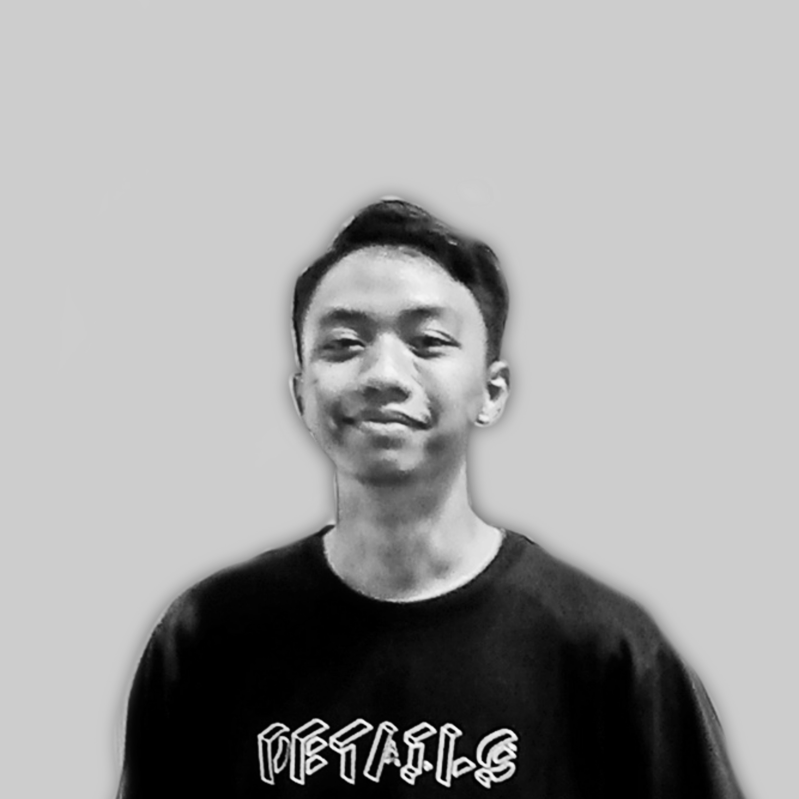

Haydar Hilmy Alhakim
CURRICULUM
VITAE

My name is Haydar Hilmy Alhakim, you can call me Haydar. I am a student majoring
in Informatics Engineer at Dian Nuswantoro University Semarang (FIK,
Udinus).
I am primarily focused on Web Development and consider myself a full-stack
developer. I am proficient in HTML, CSS, JavaScript, and PHP, as well as frameworks like
Laravel. Additionally, I have experience in developing web applications using these
technologies. Besides, I haven't bad communication skills.